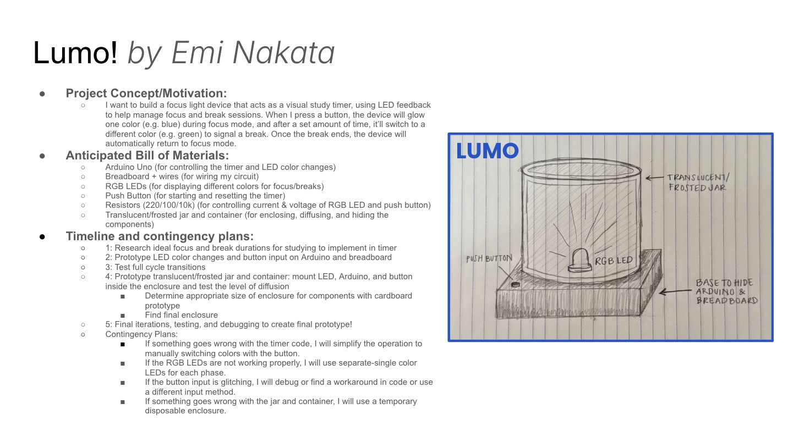

Project Concept/Motivation
I want to build a focus light device that acts as a visual study timer, using LED feedback to help manage focus and break sessions. When I press a button, the device will glow one color (e.g. blue) during focus mode, and after a set amount of time, it’ll switch to a different color (e.g. green) to signal a break. Once the break ends, the device will automatically return to focus mode. Anticipated Bill of Materials
- Arduino Uno (for controlling the timer and LED color changes)- Breadboard + wires (for wiring my circuit)
- RGB LEDs (for displaying different colors for focus/breaks)
- Push Button (for starting and resetting the timer)
- Resistors (220/100/10k) (for controlling current & voltage of RGB LED and push button)
- Translucent/frosted jar and container (for enclosing, diffusing, and hiding the components)
Timeline
1: Research ideal focus and break durations for studying to implement in timer2: Prototype LED color changes and button input on Arduino and breadboard
3: Test full cycle transitions
4: Prototype translucent/frosted jar and container: mount LED, Arduino, and button inside the enclosure and test the level of diffusion
- Determine appropriate size of enclosure for components with cardboard prototype
- Find final enclosure
5: Final iterations, testing, and debugging to create final prototype!
Contingency Plans
- If something goes wrong with the timer code, I will simplify the operation to manually switching colors with the button.- If the RGB LEDs are not working properly, I will use separate-single color LEDs for each phase.
- If the button input is glitching, I will debug or find a workaround in code or use a different input method.
- If something goes wrong with the jar and container, I will use a temporary disposable enclosure.